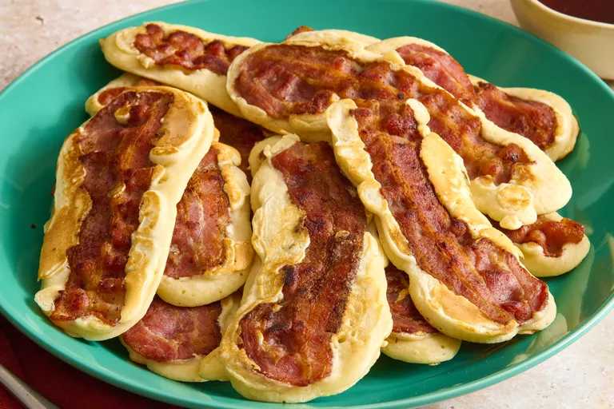

HOME
Bacon Pancake Dippers

Description
Bacon pancake dippers are a finger-friendly breakfast treat featuring crispy strips of cooked bacon coated or wrapped in elongated, fluffy pancake batter.
Designed to be picked up and dunked straight into warm maple syrup, they combine sweet and savory flavors into one easy meal
Ingredients
- 1 (12-ounce) package bacon
- 1 (10 ounce) box low carb pancake mix or your preferred mix
- 1 cup water, or more as needed
- oil as needed for griddle
- maple syrup for dipping
Steps
- Place bacon in a large skillet and cook over medium-high heat, turning occasionally, until evenly browned, about 10 minutes. Drain bacon slices on paper towels.
- Lightly oil a griddle.
- Whisk together low carb pancake mix and water according to package instructions. Fill batter into a piping bag and pipe long thin oval pancake shapes onto the griddle that are a little longer and wider than a piece of bacon. You can also use a spoon he batter onto the griddle.
- Lightly press a slice of cooked bacon into the batter of each pancake.
- Cook over medium-high heat until bubbles form and the edges are dry, 3 to 4 minutes. Flip and cook until browned on the other side, 2 to 3 minutes. Repeat with remaining batter.
- Dunk in maple syrup and enjoy.